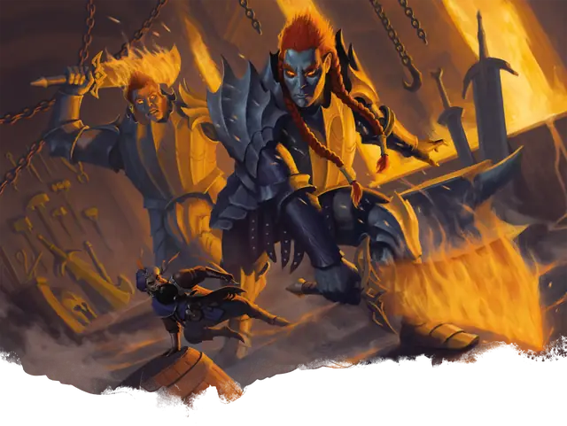

Огненный великан
Fire Giant
Огромный Великан, Принципиальный Злой

Класс Защиты 18 Инициатива +3 (13)
Хиты 162 (13к12 + 78)
Скорость 30 футов
| мод | спас | ||
|---|---|---|---|
| СИЛ | 25 | +7 | +7 |
| ЛОВ | 9 | −1 | +3 |
| ТЕЛ | 23 | +6 | +10 |
| мод | спас | ||
|---|---|---|---|
| ИНТ | 10 | +0 | +0 |
| МДР | 14 | +2 | +2 |
| ХАР | 13 | +1 | +5 |
Иммунитеты Огонь
Чувства пассивное Восприятие 16
Языки Великаний
Опасность 9 (5 000 опыта; БВ +4)
Действия
Мультиатака. Великан совершает две атаки Пылающим мечом или Броском молота в любой комбинации.
Пылающий меч. Бросок рукопашной атаки: +11, досягаемость 10 фт. Попадание: 21 (4к6 + 7) Рубящего урона плюс 10 (3к6) урона Огнём.
Бросок молота. Бросок дальнобойной атаки: +11, дистанция 60/240 фт. Попадание: 23 (3к10 + 7) Дробящего урона плюс 4 (1к8) урона Огнём, и цель отталкивается от великана на расстояние вплоть до 15 футов по прямой и получает Помеху на следующий бросок атаки до конца своего следующего хода.
Бонус мастерства +4
Среда обитания Горы, Подземье
Сокровища Оружейные
Огненный великан
Великан тлеющих глубин
Огненные великаны обитают в полых гротах и раскалённых реках горных недр. Там они обращают подземный жар и богатства в чудеса — от титанического оружия до тончайших произведений искусства. У огненных великанов широкое тело, кожа самых разных каменистых оттенков и подобные пламени волосы.
Большинство огненных великанов живут в вулканически активных горах или просторных пещерах, где устроены их крепости-кузницы. Злые великаны думают прежде всего о войне и куют оружие, чтобы покорять соседей и захватывать ценные богатства. Более сдержанные соплеменники обменивают свои творения на нужное им и порой делятся древними приёмами великанского ремесла с другими мастерами.
Но и те, и другие склонны браться за грандиозные замыслы и очень не любят, когда их отвлекают от работы в титанических мастерских.